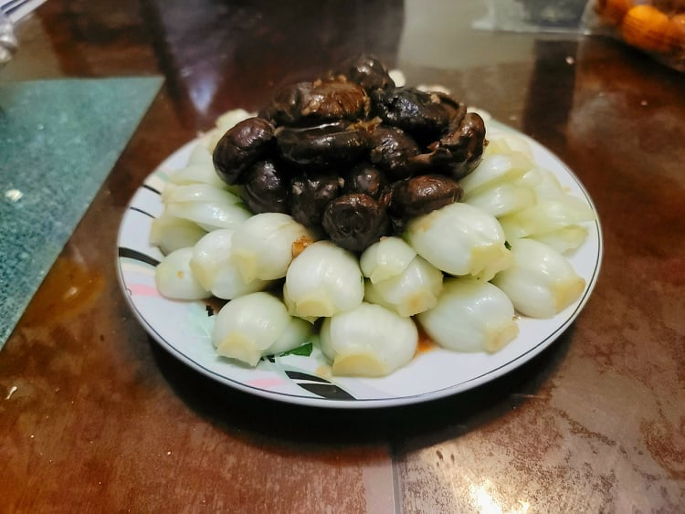

Xiang Gu Cai Xin (Braised Chinese Mushroom with Bok Choy)

Ingredients:
Mushrooms:
- 70 grams Dried chinese mushrooms
- 3 cups Boiling water
- 2 cloves Garlic, minced
- 1 tbsp Shaoxing wine
- 1 1/2 tbsp Soy sauce
- 1 tbsp Oyster sauce
- 1 1/2 tsp Sugar
- 1/4 tsp Dark soy sauce
- 1/8 tsp White pepper
- 1/8 tsp Sesame oil
- 1 tbsp Cornstarch, combined with 1 tbsp Water
Bok Choy:
- 10 - 16 oz Baby bok choy, cut in half lengthwise
- 6 cups Water
- 1 tbsp Vegetable oil
- 1 tsp Salt
Instructions:
- Place the dried Chinese mushrooms into a medium bowl, and pour the boiling water over them. Place a plate over the bowl so the mushrooms are completely submerged. Let rest for about an hour. When the mushrooms are soft, cut off any woody stems and place back into the water.
- Thoroughly wash the bok choy. Place the 6 cups water, oil and salt into a pot and bring to a boil. Blanch the bok choy for about 40-60 seconds. Then strain from the water and place onto the serving plate in a circle formation.
- Strain the mushrooms from the soaking liquid and lightly squeeze out any excess liquid. Reserve the mushroom liquid.
- Heat 1 1/2 tablespoons vegetable oil in a wok over medium high. Add in the mushrooms and garlic and stir fry for 10-30 seconds. Then stir in the Shaoxing wine.
- Pour in the mushroom liquid, making sure not to pour in any sediment. Let the liquid come to a simmer.
- Add in the soy sauce, oyster sauce, sugar, dark soy sauce, white pepper, and sesame oil. Stir until combined. Reduce heat to a simmer and let cook for 5 minutes.
- Add in the cornstarch slurry while stirring constantly. Let cook for another minute. If the sauce is not thick enough at this point, either add more cornstarch slurry or raise the heat and let the sauce reduce. Transfer the mushrooms and sauce to the center of the plate of baby bok choy and serve immediately.